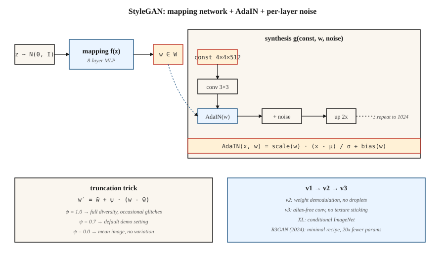

StyleGAN
Most generators stir z into every layer at the same time. StyleGAN split it apart: first map z to an intermediate w, then *inject* w at every resolution level through AdaIN. That single change untangled the latent space and made photorealistic faces a solved problem for seven years running.
- Type
- Build
- Languages
- Python
- Prerequisites
- Phase 8 · 03 (GANs), Phase 4 · 08 (Normalization), Phase 3 · 07 (CNNs)
- Time
- ~45 minutes
#The Problem
A DCGAN maps z to an image through a stack of transposed convolutions. The problem: z controls everything — pose, lighting, identity, background — entangled together. Move along one axis of z, all four change. You cannot ask the model "same person, different pose" because the representation does not factor that way.
Karras et al. (2019, NVIDIA) proposed: stop feeding z directly into conv layers. Feed a constant 4×4×512 tensor as the network input. Learn an 8-layer MLP that maps z ∈ Z → w ∈ W. Inject w at every resolution via adaptive instance normalization (AdaIN): normalize each conv feature map, then scale and shift by affine projections of w. Add per-layer noise for stochastic detail (skin pores, hair strands).
The result: W has roughly orthogonal axes for "high-level style" (pose, identity) vs "fine style" (lighting, color). You can swap styles between two images by using image A's w for the low-resolution levels and image B's w for the high. This unlocked editing, cross-domain stylization, and the entire "StyleGAN-inversion" line of research.
#The Concept

Mapping network. f: Z → W, an 8-layer MLP. Z = N(0, I)^512. W is not forced to be Gaussian — it learns a data-adapted shape.
Synthesis network. Starts from a learned constant 4×4×512. Each resolution block: upsample → conv → AdaIN(w_i) → noise → conv → AdaIN(w_i) → noise. Resolutions double: 4, 8, 16, 32, 64, 128, 256, 512, 1024.
AdaIN.
AdaIN(x, y) = y_scale · (x - mean(x)) / std(x) + y_biaswhere y_scale and y_bias come from affine projections of w. Normalize per feature map, then restyle. "Style" here is the first- and second-order statistics of the feature map.
Per-layer noise. Single-channel Gaussian noise added to each feature map, scaled by a learned per-channel factor. Controls stochastic detail without affecting global structure.
Truncation trick. At inference, sample z, compute w = mapping(z), then w' = ŵ + ψ·(w - ŵ) where ŵ is the mean w over many samples. ψ < 1 trades diversity for quality. Almost every StyleGAN demo uses ψ ≈ 0.7.
#StyleGAN 1 → 2 → 3
| Version | Year | Innovation |
|---|---|---|
| StyleGAN | 2019 | Mapping network + AdaIN + noise + progressive growing. |
| StyleGAN2 | 2020 | Weight demodulation replaces AdaIN (fixes droplet artifacts); skip/residual architecture; path-length regularization. |
| StyleGAN3 | 2021 | Alias-free convolution + equivariant kernels; eliminates texture sticking to pixel grid. |
| StyleGAN-XL | 2022 | Class-conditional, 1024², ImageNet. |
| R3GAN | 2024 | Rebrands with stronger reg; closes gap to diffusion on FFHQ-1024 with 20x fewer params. |
In 2026 StyleGAN3 remains the default for (a) narrow-domain photorealism at high FPS, (b) few-shot domain adaptation (train on a new dataset with 100 images, freeze mapping), (c) inversion-based editing (find the w that reconstructs a real photo, then edit that w). For open-domain text-to-image, it is not the tool — diffusion is.
#Build It
code/main.py implements a toy "style-GAN lite" in 1-D: a mapping MLP, a synthesis function that takes a learned constant vector and modulates it with w-derived scale/bias, and per-layer noise. It shows that injecting w via affine-modulation matches or beats concatenating z into the generator's input.
#Step 1: mapping network
def mapping(z, M):
h = z
for i in range(num_layers):
h = leaky_relu(add(matmul(M[f"W{i}"], h), M[f"b{i}"]))
return h#Step 2: adaptive instance normalization
def adain(x, w_scale, w_bias):
mu = mean(x)
sd = std(x)
x_norm = [(xi - mu) / (sd + 1e-8) for xi in x]
return [w_scale * xi + w_bias for xi in x_norm]Per-feature-map scale and bias come from w via linear projection.
#Step 3: per-layer noise
def add_noise(x, sigma, rng):
return [xi + sigma * rng.gauss(0, 1) for xi in x]Sigma per-channel is learnable.
#Pitfalls
- Droplet artifacts. StyleGAN 1 produced a blobby droplet in the feature maps because AdaIN zeroed out mean. StyleGAN 2's weight demodulation fixes it by scaling the convolution weights instead.
- Texture sticking. StyleGAN 1 and 2 textures followed pixel coordinates, not object coordinates (visible when interpolating). StyleGAN 3's alias-free convolutions fix this with windowed sinc filters.
- Mode coverage. Truncation
ψ < 0.7looks clean but samples from a narrow cone; useψ = 1.0if you need diversity. - Inversion is lossy. Inverting a real photo into
Wis usually done through optimization or an encoder (e4e, ReStyle, HyperStyle). Results drift over many iterations.
#Use It
| Use case | Approach |
|---|---|
| Photoreal human faces (anime, product, narrow) | StyleGAN3 FFHQ / custom fine-tune |
| Face editing from a photo | e4e inversion + StyleSpace / InterFaceGAN directions |
| Face swap / reenactment | StyleGAN + encoder + blending |
| Avatar pipelines | StyleGAN3 w/ ADA for low-data fine-tune |
| Domain adaptation from a few images | Freeze mapping network, fine-tune synthesis |
| Multi-modal or text-conditioned generation | Don't — use diffusion |
For product-grade demos where the answer is "photo of a person's face", StyleGAN beats diffusion on inference cost (single forward pass, <10ms on a 4090) and sharpness for the same quality bar.
#Ship It
Save outputs/skill-stylegan-inversion.md. Skill takes a real photo and outputs: inversion method (e4e / ReStyle / HyperStyle), expected latent loss, editing budget (how far in W you can move before artifacts), and a list of known-good editing directions (age, expression, pose).
#Exercises
- Easy. Run
code/main.pywithadain_on=Trueandadain_on=False. Compare the spread of outputs for a fixed latent vs perturbed latent. - Medium. Implement mixing regularization: for a training batch, compute
w_a,w_b, and applyw_afor the first half of synthesis andw_bfor the second half. Does the decoder learn disentangled styles? - Hard. Take a pretrained StyleGAN3 FFHQ model (ffhq-1024.pkl). Find the
wdirection that controls "smile" by training an SVM on labelled samples; report how far you can push before identity drifts.
#Key Terms
| Term | What people say | What it actually means |
|---|---|---|
| Mapping network | "The MLP" | f: Z → W, 8 layers, decouples latent geometry from data statistics. |
| W space | "The style space" | Output of the mapping network; roughly disentangled. |
| AdaIN | "Adaptive instance norm" | Normalize feature map, then scale + shift by w-projection. |
| Truncation trick | "Psi" | w = mean + ψ·(w - mean), ψ<1 trades diversity for quality. |
| Path-length regularization | "PL reg" | Penalizes large changes in image per unit change in w; makes W smoother. |
| Weight demodulation | "The StyleGAN2 fix" | Normalize conv weights instead of activations; kills droplet artifacts. |
| Alias-free | "StyleGAN3's trick" | Windowed sinc filters; eliminates texture sticking to the pixel grid. |
| Inversion | "Find w for a real image" | Optimize or encode x → w so G(w) ≈ x. |
#Production note: why StyleGAN still ships in 2026
StyleGAN3 on a 4090 generates a 1024² FFHQ face in under 10 ms — num_steps = 1, no VAE decode, no cross-attention pass. In production terms this is the floor latency for any image generator. A 50-step SDXL + VAE-decode pipeline at the same resolution is ~3 seconds. That is a 300× gap, and for narrow-domain products (avatar services, ID document pipelines, stock face generation) it wins on TCO.
Two operational consequences:
- No scheduler, no batcher. Static batch at the target occupancy is optimal. Continuous batching (essential for LLMs and diffusion) provides zero benefit because every request takes the same FLOPs.
- Truncation
ψis the safety knob.ψ < 0.7samples from a narrow cone of the mapping network's range. This is the only lever the serving layer has over sample variance. Lowerψat peak load, raise it for premium users.
#Further Reading
- Karras et al. (2019). A Style-Based Generator Architecture for GANs — StyleGAN.
- Karras et al. (2020). Analyzing and Improving the Image Quality of StyleGAN — StyleGAN2.
- Karras et al. (2021). Alias-Free Generative Adversarial Networks — StyleGAN3.
- Tov et al. (2021). Designing an Encoder for StyleGAN Image Manipulation — e4e inversion.
- Sauer et al. (2022). StyleGAN-XL: Scaling StyleGAN to Large Diverse Datasets — StyleGAN-XL.
- Huang et al. (2024). R3GAN: The GAN is dead; long live the GAN! — modern minimal GAN recipe.
Nice. That's 6 minutes of Generative AI behind you.
Continue to Diffusion Models — DDPM from Scratch →